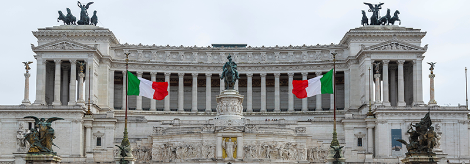

Italie
L'Italie, pays européen bordé par la Méditerranée et l'Adriatique, a laissé une forte empreinte sur la culture et la cuisine occidentales. Sa capitale, Rome, abrite le Vatican ainsi que des trésors artistiques et des ruines antiques. Les autres grandes villes comprennent Florence, avec des chefs-d'œuvre de la Renaissance comme le David de Michel-Ange et le dôme de Brunelleschi, Venise, la ville des canaux, et Milan, la capitale italienne de la mode.
L'italie' s’est imposé au fil du temps comme la destination romantique par excellence. Une évidence étant donné le nombre de lieux pittoresques et mythiques que le pays compte. L’Italie émerveille, l’Italie passionne. Son charme touche le cœur de la majorité de ses touristes, et particulièrement celui des couples.
test 2
test 2
La cuisine italienne est l’une des plus appréciée au monde, certainement pour ses influences multiples. Parmi les plats typiquement italiens à connaître, nous retrouvons le risotto (plat à base de riz), le carpaccio (de la viande de bœuf crue ou séchée, assaisonnée d’huile d’olive ou de mayonnaise), la scottiglia (un plat essentiellement composé de viandes), les lasagnes, sans parler des plats à base de poisson (thon, espadon et crustacés). L’Italie est un grand producteur de vin, de quoi siroter son vin rouge ou blanc avec un intérêt tout particulier.
| Continent | Capitale | Langue | Monnaie | Population |
| Europe | Rome | Italien | Euro | 59,07 millions |
Rome
Capitale de l'Italie, Rome est une grande ville cosmopolite dont l'art, l'architecture et la culture de presque 3 000 ans rayonnent dans le monde entier. Ses ruines telles que celles du Forum Romain et du Colisée évoquent la puissance de l'ancien Empire romain. Siège de l'Église catholique romaine, la Cité du Vatican compte la basilique Saint-Pierre et les musées du Vatican où se trouvent des chefs-d'œuvre tels que la fresque de la chapelle Sixtine, peinte par Michel-Ange.
Le Colisée
Le Colisée est le nom d'un amphithéâtre romain datant de l'antiquité, construit sous les règnes des empereurs Vespasien et Titus, puis modifié par Domitien. On l'appelle parfois l'amphithéâtre Flavien, son nom actuel est un dérivé de l'adjectif 'colossal', qui est l'une de ces caractéristiques. Le Colisée est la plus grande construction de l'antiquité romaine, il se trouve actuellement au centre-ville de Rome, ce qui en fait le monument le plus visité de Rome.
test 2
Le Vatican
test 2
Le Vatican, ville-État située au cœur de Rome , est le siège de l'Église catholique romaine et la résidence du pape. Il abrite de nombreuses œuvres d'art et d'architecture emblématiques. Les Musées du Vatican renferment des sculptures romaines antiques telles que le célèbre "Groupe du Laocoon", ainsi que des fresques Renaissance dans les chambres de Raphaël et la chapelle Sixtine, connue pour son plafond réalisé par Michel-Ange.
La Fontaine de Trevi
La ‘Fontana di Trevi’, aussi appelé la fontaine de Trévi, est sans doute la fontaine la plus célèbre du monde et certainement de Rome. La fontaine baroque située sur la place Piazza di Trevi a été conçue sur les ordres du pape Clément XII par Bernini, dit Le Bernin, en premier lieu et construite 50 ans plus tard et recréée par l'architecte Nicola Salvi. La construction a duré au moins de 1732 à 1762. La fontaine doit sa renommée à de nombreux films dans lesquels elle fait office de décor, tels que La Dolce Vita, Angels and Demons, The Lizzie McGuire Movie et Roman Holiday.
test 2
Le Forum Romain
test 2
test 1
Monument à Victor - Emmanuel II
test 1
test 2
Basilique saint pierre
test 2
test 1
Milan
Milan, métropole de la région de la Lombardie, au nord de l'Italie, est une capitale mondiale de la mode et du design. Ce centre financier, siège de la Bourse d'Italie, est également connu pour ses boutiques et ses restaurants haut de gamme. La cathédrale gothique du Dôme de Milan et le couvent Santa Maria delle Grazie, qui abrite la fresque de Léonard de Vinci, La Cène, témoignent de plusieurs siècles d'art et de culture.
Le Dôme de Milan
test 1
test 2
La galerie Vittorio Emanuele II
test 2
test 1
Le château des Sforza
test 1
test 2
Venise
Venise, capitale de la région de la Vénétie au nord de l'Italie, occupe plus de 100 petites îles dans un lagon de la mer Adriatique. La ville ne comprend aucune route, uniquement des canaux, dont le Grand Canal, bordé de palais gothiques et Renaissance. Au centre, la place Saint-Marc abrite la basilique Saint-Marc, recouverte de mosaïques byzantines, et le campanile de Saint-Marc, avec vue sur les toits rouges de Venise.
la basilique saint marc
La basilique San Marco a initialement été construite au IXème siècle pour abriter les reliques de l’évangéliste St Marc, volées en 828 en Alexandrie, par une expédition qui aurait été mandatée par le Doge Giustiniano Participazio de Venise. Cette basilique, située sur la place Saint Marc et attenante au Palais des Doges, avait pour but de rivaliser avec celle de Rome qui abriterait des reliques de Saint Pierre.
test 2
La place Saint-Marc
test 2
La place Saint-Marc, ou Piazza San Marco en italien, n’est peut-être pas le centre géographique du cœur historique de la ville lagunaire, mais c’est le cœur touristique que personne ne peut manquer. La célèbre piazza est située dans le quartier de San Marco, délimité à l’ouest par le Grand Canal et au sud par le Bacino di San Marco, ou, plus simplement, le bassin de Saint-Marc. Au nord et à l’est, en revanche, se trouvent les quartiers de Cannaregio et de Castello. À San Marco appartient également l’île San Giorgio Maggiore, déjà mentionnée et visible de loin.
Palerme
Palerme est la capitale de l'île italienne de Sicile. La cathédrale de Palerme, datant du XIIe siècle, renferme des tombes royales, tandis que l'immense édifice classique du Teatro Massimo est célèbre pour ses spectacles d'opéra. Le palais des Normands, une demeure royale dont la construction a débuté au IXe siècle, se trouve également au centre, tout comme la chapelle palatine, arborant des mosaïques byzantines. Parmi les marchés animés, il est possible de citer le marché de rue de Ballarò, en centre-ville, et celui de la Vucciria, près du port.
La cathédrale de Palerme
La cathédrale de Palerme est l'une des nombreuses églises importantes de la ville de Palerme sur la côte nord de la Sicile. La cathédrale est classée au patrimoine mondial de l'UNESCO comme l'un des sites classés sous le nom de "Palerme arabo-normande et les cathédrales de Cefalù et Monreale".
test 2
La street-food et les marchés de Palerme
test 2
Les marchés de rue de Palerme sont l’occasion de plonger dans les saveurs de la Sicile, et au cœur de la vie palermitaine. La cuisine sicilienne est riche, et retrouverer tous les éléments qui la composent sur des étals de marché installés dans des rues étroites entre des édifices en ruines, comme sur les marchés de Ballaro et Vucciria. La street-food est très présente à Palerme .
L'Etna
L'Etna est un volcan d'Italie situé en Sicile. Culminant à 3 357 mètres d'altitude, il est le plus haut volcan actif d'Europe et l'un des plus actifs du monde avec près de 80 éruptions au cours du XXᵉ siècle.
test 2